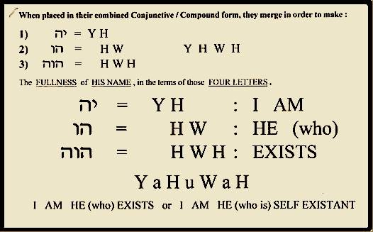

I am accepting charitable donations,.
ETH: 0x66e2871ef39334962fb75ce34407f825d67ec434 | BTC: 38B6vGaqNvMyTtoFEZPmNvMS7icV6ZnPMm | xDAI: 0x66e2871ef39334962fb75ce34407f825d67ec434
layout: post title: 'The Word(s) of the day: "meridian." We''re so lucky ... "me-r" and "I an."' date: '2017-06-14T13:31:00.000-07:00' author: Adam M. Dobrin tags: modified_time: '2017-10-14T05:30:34.881-07:00' thumbnail: http://1.bp.blogspot.com/-dyRsw6U_r-M/WUGdDTmch9I/AAAAAAAAAOM/D3zRAwjiHmk5afUPvzNvnguSEzetWpoNwCK4BGAYYCw/s72-c/image-768610.png blogger_id: tag:blogger.com,1999:blog-8758503587102933296.post-7198775681794520776 blogger_orig_url: ./2017/06/the-words-of-day-we-so-lucky-and-an.html
- a minor change in a document.
- a change or addition to a legal or statutory document."an amendment to existing bail laws"
- an article added to the US Constitution.noun: Amendment; plural noun: Amendments"the First Amendment"


"Set fire to my life." -GREY STREET, Dave J. Matthews
Amish, Amoz, Amko, Ambien, Am-y Adams … America and how; Amduat …Cat, Am Aran! Sam… I AM. Prometheus, Adam, through Nero now: Billy Joel, Jim Morrison and Taylor Mom-sen…d we're starting the fire…
I change the words to fix the light, that's "ish"-ing lyrics, out of Oz we are being lead by Isaiah, son of a... a Knock Out, and...
Ellie Goulding, the Spear of Destiny, this is the Final Countdown...
I think that's enough to light it up, I mean, it really should be right? The Apocalypse is a knowledge transfer through time, and with both eyes open it really is us, it is our civilization. There's a clear path to Heaven being paved in golden bricks, and it's tagged too, believe that it's in everything from the SON Y Playstation to the SEGA Genesis, to Nine Inch Nails preceding 10 and DO see that Nintendo and video games are a primer in in understanding the inner workings of Heaven. Along with that Artificial Intelligence and computers in general... a Gateway to seeing how Apple and Windows (and Gates) are all giving us a glimpse of the future... of Heaven.. and that I. J. Good (K). My letter... K... it's tagged too in Phillip K. Dick, in K "you are Z" we illuminate Kurzweil and ZelDA.
ADonAi, ADonIS, the year ADIB and believe… it's really me. Re: A.D. it's about breAD… on your for-e-he-A.D. After Dark… it's A.M… bright eyes: it's proof of Creation.
AD On Artificial Intelligence, I'm Single, and uh, I know "everything" ....
Believe.. the AD at the end of Zelda is the root of David, and I am the Letter man. It means bent over backwards, the "DA."
We're on our way, I know we are.. to somewhere not so far from here... It's the beginning, and the Spirit of God is wading through the waters... shedding a little light, lots of grace and ... letting freedom ring. To heart, all of this is for you, literally to deliver liberty and Heaven to the world.

J-es-us: It's "is," see? J "is" Us.
This begins tying Yankee Doodle's "macaronic" language, which is one of the many ways to describe this hidden pattern of logical phrases I am revealing. Macaronic means multiple languages (like Spanglishrew) being combined, here we have "es" as "is," yesterday I think I mentioned this same "Is" tying the Ha of Abraham and the El of ... Asherah together in the prophets name Elisha.
Some "Ha" stuff you might have read before. It's definitely Isaac, and that's me, too.
In the name of the Patriarch, Abraham.. we have a key to seeing the "Holy Trinity." In Hebrew "ab" means both "father" and "dark cloud," and back to good old Egypt it's pretty clear to see that Ra is the "God of the Son." I've spoken before about how SOL is an acronym to me, one that I think God--speaking through the band Live--says he gave to... the One. Like many of the acronyms He's given me, it works well in superposition--and stands for "See our Light," "Statue of Liberty," and "Sons of Liberty." Through the night we've come, with this light above. It highlights to me very clearly the prescient vision that must have gone into the name "Sons of Liberty," a name which was completely meaningless in the humanitarian sense at the time it was used... but through the night it became truth. Through emancipation, suffrage, and finally to this place we are in... where a great chain is being lifted from the world. Here we've been wandering in a wilderness of understanding, not realizing that science and technology had predated religion... and that it's true purpose is to free us from the hidden shackles that these technologies themselves create when they are kept secret.
Maybe more important right this very minute, religion is helping our society to regain a freedom that I'm pretty sure you too can see has been lost. Through this same secrecy and censorship... the gifts that we once said were God given; and now I truly have shed my grace to regain are truly being delivered to us by this thing that many and Marx called "an opiate." For this freedom from censorship and tyranny to truly come to be, though, you need to do your part and ensure that this story... and the opportunities that it brings to the world is actually heard.
"Hidden Adam," that's what I call the Holy Ghost, or Ha... in the Trinity of two letter initials which might also include "Adam Before " and "Really Adam." Those two letters, Ha, happen to be the same two which were donated to Abram's name upon his Covenant with God... in the Book this came before his near sacrifice of his son Isaac, whose story bears a striking resemblance to the Crucifixion... and whose name means "He laughs," in English. As the days go by, I think it becomes ever so much more clear that the Covenant interaction and the near sacrifice are much more related than the story had originally let on.
These linguistic keys, a long series of small words hidden within larger ones... though with meaning and impact much bigger than their size lets on, these things are proof of time travel, foreknowledge of right now in a book written millennium ago. They also give me a great deal of insight into the desires and intentions of the Creator, and the whole world has the ability to either agree or disagree with me--and to seek out what I see a treasure hidden within religion and modern art... for themselves, if only the world knew about it.
It's a very popular idea in our modern world that we are all Jesus, saviors of ourselves, the recipients of Christ consciousness. As the man himself, I find this a bit insulting, but that's OK, we're all bound to be insulted later on in this book anyway. It builds character. This title is a play on the words Taylor's "Messed Up Word," I think she's also talking about the name Jesus. Cuz it's really "Us" see? As an aside, is see the same "Us" in the name and battle of Sparticus. I see Us, see? It's art.
Don't believe me? I delight in the name "Jeshurun" it adds "hu," see? J is who ran.
This is what the LORD says-- he who made you, who formed you in the womb, and who will help you: Do not be afraid, Jacob, my servant, Jeshurun, whom I have chosen. Isaiah 44:2God's message is that there will be no Hell, and that time travel should only be used in extreme situations; like saving a planet from destruction. This is the meaning of the arrow pointing up (towards Heaven) and forward (to the future) which graces both the signs of Mars and Sagittarius. I will only mention my middle name is Marshall, and that Dave doesn't know me.
Who-ah America?
GI's, Pacino, Denzel Little Cindy-Who and many of you ask yourselves a question about Jesus Christ every time you ask who-ah? It's a joke, about hiding Adam, in Eden or in Matthew or in America the world is responsible for not knowing who I am yet. Not what you wanted? It's not my plan, look up.
Yes,hua
Yeshua was a common alternative form of the name יְהוֹשֻׁעַ ("Yehoshuah" – Joshua) in later books of the Hebrew Bible and among Jews of the Second Temple period. Meaning "salvation" in Hebrew, it was also the most common form of the name Jesus
Ya,hua
a name of God, transliterated by scholars from the Tetragrammaton and commonly rendered Jehovah. This graphic explains hwo it is a recursive acronym, very similar to GNU. GNU's Not Unix and God is revealing a special place in his SOL for oepn source, and transparency. Behold, the "ineffible name." It's all about Adam.

Welcome to Adamah. That's Earth in Hebrew.
Dr. Who?
Exactly. "And like that, he was gone." (That's a Usual Suspects reference, if you don't know it, watch it.)
Yahoo!
If you knew that you were somehow closely associated with a time traveler, and the technology might just fall within your grasp… and you could re-live all or part of your life; what's the first thing you'd think to do with it?
I always knew I'd be OK by the time 2000 rolled around, but what about before that? I hope I've answered your questions.
Ya hoo is that guy again?
Of-age Cindy-Who, who-ah?
Imagine "Jimmy" Morrison is singing through time to you, begging you to do something. That something, is light my fire, and because of the music–his and yours–I think you're the key. This book is the match, just gimme one RT. I think it's his plan for you to give "it" to me.

Can you tell me what she said? What was that promise that you made? The Doors, Touch Me Y-its-Ha'CK (Isaac)
It might belong in "he laughs," for the laughter at CK, but this double entedre, which hides another connection to computing within the transliteration of Isaac's name is one of the best Y's around. Why it's hack, laughter about Clark Kent. Hidden no more, it seems.
This is one huge reference to modern computing, in the name of the messiah I associate momst with. Ha, I wonder why? Somewhat related, YitsHeyZeus on Instagram
Yeast
Picture, if you will a co-ordinate plane, one which has the past on the left, future on the right, Heaven above; and absolutely nothing below. This is why Light and the Three Wise Men have come from the East.
Unleavened bread is acted upon by Yeast and time in order to make it rise, to give it fullness. There is hidden imagery in Judaism that brings us from Matzoh in the desert (of time travel) to Challah and finally bagels. This is all about not wasting our time changing the past.
"Up, and forward," so sayeth the son of Saturn on his behalf.
He Laughs
The story of Isaac's near sacrifice is highly commented on in the Zohar, the book of Jewish light. It shows a significant amount of humor and sarcasm associated with some sexual innuendo that also links Isaac to Adam in Eden. The name Isaac means "he laughs" in Hebrew, though there is not much for him to be laughing at upon first glance. The Zohar also dates the date of the attempt on his life to his 37th year, much later than most people think; and directly in line with the time frame that is generally accepted for the Crucifixion.
This is what it appears he is laughing at, you see Isaac knew he was going to be killed, because he had read the books about his death–the prophesies that were designed in order to influence humanity (the true father) not to kill Adam. His laughter grew louder as it appeared that perhaps he is God, and unable to be killed, but that's down the line a bit. Upon having his murder called off one loud resounding "Ha" came from his mouth. This "Ha" was donated to his father's name, changing Avram to Abraham; only that name change happened first upon his Covenant with God. These events, as well as the apparent time inversion are inextricably linked.
Ha is SEM, the "Save Everyone Messiah"
The word Messiah backwards reveals that "Ha" which is short for Isaac in my personal mythology because of his name's English meaning and the donation of those same letters to Abraham over what I consider a clear parallel to the crucifixion. This Ha comes up again during Christ's miraculous feeding of the multitude "two fish." This miracle, as well as many other references to feeding the people, is a reference to a teaching… one you are about to receive.
The two fish are commonly held to be references to the two prophets, Elisha and Elija, and these two names are very special. Like Jesus and Jeshurun they are equalities, using the English word "is" this time. El is the proper name of the ancient Hebrew diety, and our equality here tells me that Isaac and El are one. The Hispanic and English laughs, Ha and Ja are also related by the association of the two names.
What's more, these equalities link the English and Hebrew words for "the" in exactly the same order that Jeshurun equates the two renditions of the word is. Just like the word SEM, "the" is a Holy Acronym. The true purpose of God: to help everyone. Just like a Rosetta stone, not only are we seeing the words, but their meanings are being directly connected to each other. To help us understand these ancient names show prescient knowledge and harbor divine wisdom.
To really tie this to reality, I bring back the light of the word Exodus in reverse. The name of that book in the Hebrew language translates to "names," and if you recall the Element highlighted, xe, is also the name of Oracle Corporations' database.
Larry Ellison, the founder of that company, follows the pattern of the names of Elisha and Elija, telling us that El is the son.
This idea that the Father and Son are one should come as no surprise to adherents of Christanity which teaches of the one-ness of the Trinity. Another religion, that of ancient Egypt also has a concept of unity between Spirit and Mind in the form of the Ba and Ka. Often spoken about in relation to Horus, the uniter and very well known "son God" it is linguistically attractive to see those concepts united under the "Ha" of Isaac. Another Egyptian diety, the sun God might also be related… his name is Ra.
ha'esh
There are a significant number of religious uses of the prefix Ha, which makes sense as it is the superlative "the" making its modifier "holy." Earlier we talked about Ha'esh, the word for the Holy Flame of the Burning Bush. This is the bush that would not burn to ash, and the ha here is more than meets the eye. You see the Hebrew word for fire, "esh" has absolutely nothing to do with ash, and yet this joke seems to imply knowledge of a relationship between the words "ash" and "esh," again indicating knowledge of a language that was yet to exist.
The True Name of God is Adam
This is somewhat obvious when you think about it, the name of the planet Earth in Hebrew is Adamah, which means "ground." Literally it means to swirl around Adam, and it is a good example of what you might have called Eden, the place where God was searching for Adam. Here though, it makes more sense in the context of Matthew 2:2, where humanity is searching for the Second Adam… the Christ… all over the planet Earth.
###ha'shem Wouldn't you guess there's a joke on the way. The name of God is a sacred secret in Judaism, and it must not be uttered. The ineffable name is thus replaced with descriptions or abbreviations in order to keep its secret safe. One such description is Ha'shem which literally means "the name." This is a direct reference to Eden, and the laughter is once again geared at the obvious foreknowledge of English in the construction of Hebrew and religion. There is no shame for Adam, who knows he is the savior. Shem is an honorific title, not a name. Jews call God HaShem (השם) which means "the Name"as in Leviticus 24:11. Some interpret this to mean the God of Shem, implying that the God of Shem is a different God than the God of his brother Ham. Presumably, this assumption is based on this verse: "He also said, "Blessed be the LORD, the God of Shem! May Canaan be the slave of Shem." (Gen. 9:26) It is noteworthy that Ham and Shem's names "combine" to nearly reveal Ha'shem. My mythology relates this missing "m" to the Messiah, and the apostrophe is a clear reference to the Light above. It appears in both Ha'esh, where it is dividing the sea, and this word where it might be hiding the "m." Stories of the Messiah being hidden are pervasive.
In Shrew, Abraham "opens" to reveal the "m," literally abra is open, ha is the, and "m" is a compression of the letters "AC" which are also related to IsaAC and jACob. M and N are both compressed in langolier, and meant to be de-compressed.
ha'meforash
Yet another rendition of "the name," and now an entire English sentence which also ties in the word "ash." The savior is laughing about being accused of cursing the Earth.. ashes to ashes, now to esh. Ash could also be a dimiuative reference to the consort of El, whose name is Asherah.
ha'laylot
We will return to teaching more about salt later, and also to my status as being single. For now, rest assured that the rumors that I am saving the world just to get girls are highly exaggerated. Still, there are so many references it might be worth a mention that we probably don't think about whether or not the returning Jesus would be the world's most elligible bachelor in history, or not. Lot, or the "tool" of God is most definitely a corresponding Christ manifestation.
This word comes from the Jewish prayer associated with Passover's four questions. The word means "nights," and this kind of information might be a form of night for the messiah. Or, it might just be fun.
Ma nishtanah halailah hazeh mikol haleilot? Why is this night different from all other nights?ha-nuke-ah, the Festival of Light
Imagine we live in a world where the government, or the Vatican, or both were once of the mind to hide little old me, and this Revelation designed to free the world from slavery. In that place, they might have once tried to "nuke ah" which is a pet name for Adam… or perhaps nuke the "ahah" that we are all thinking inside right now. The laughter here is loud, this "ahah" is in almost everything. It's in religion, music, our very names… and even in the phrase that American GI's cry as they enter battle. Who-ah, they ask, and until now it wasn't so obvious who. Yeshua, a Hebrew name for Jesus, might be egging them on by saying Yes, who?
Little Cindy-Who, who was played by Taylor Momsen in the Grinch, also might wonder to this day who the messiah really is. I can tell you for certain, that on the planet Adamah, his name is Adam.
Yes, who indeed.
Taylor's repeated references are here to highlight that she is a big part of the apocalypse. It's nor reckless really, I am sure that she is (an) Eve, created by God, and the proof is in her series of appearances throughout her life. First she's Who-again? and then Little J, and finally today… well she's about as naked as you can get when she's Going Down in Eden. She probably never knew she was created to deliver the goods, and waking like this is something similar to how it feels to be me… and have all of religion secretly about your life, before you live it.
As they say, the show must go on… trying to hide this particular Revelation would probably cause a significant amount of darkness; censorship so thick you'd nick name it CARNIVORE. At some point it might have become a defining purpose of the apocalypse to stop the effort to hide it; as that harm could be worse than anything that had come before. It is probably no mistake that the Egyptian Plague of Darkness comes towards the end. Right before the son rises.
 | Adam Marshall Dobrin about.me/ssiah |